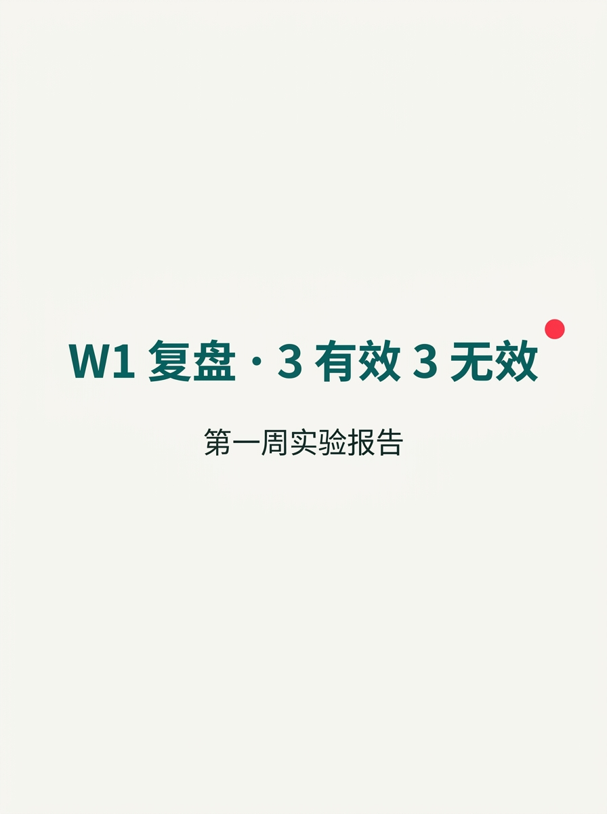
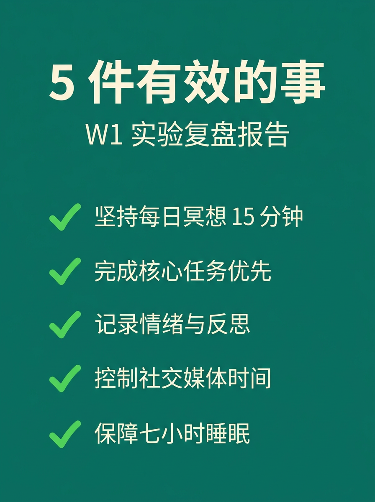
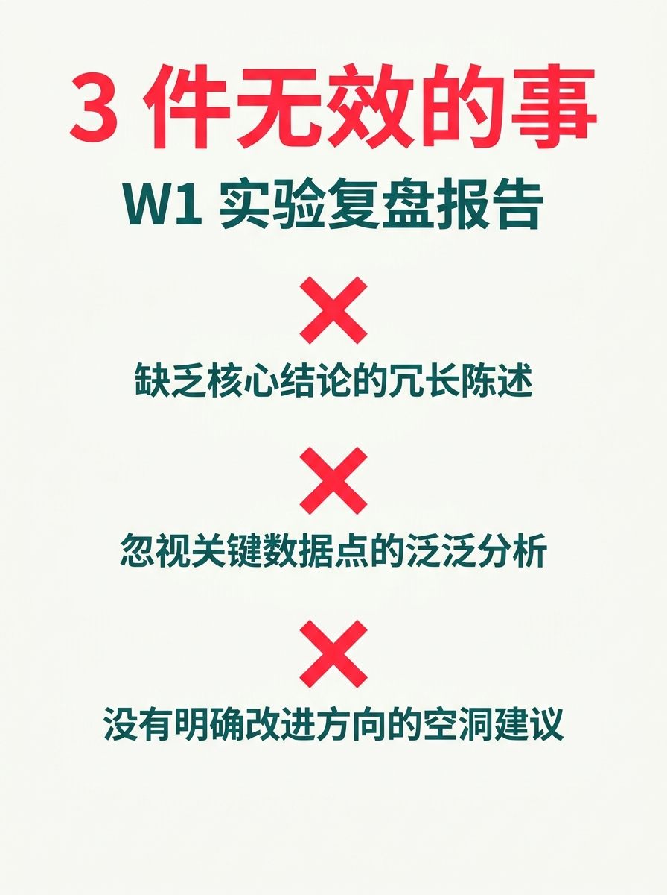
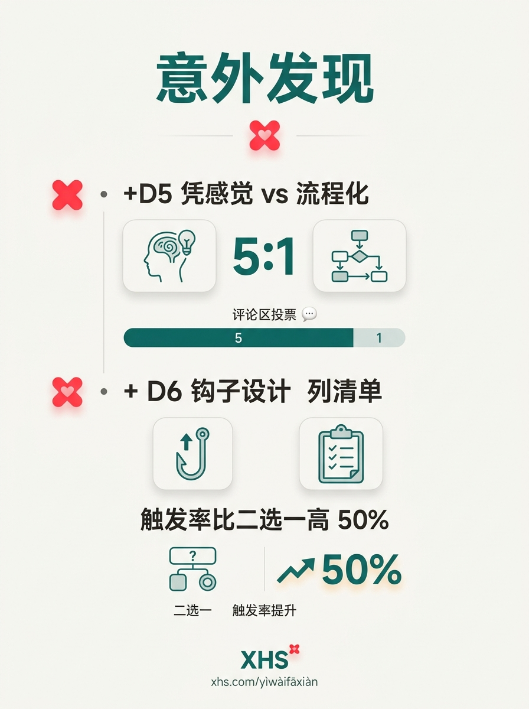
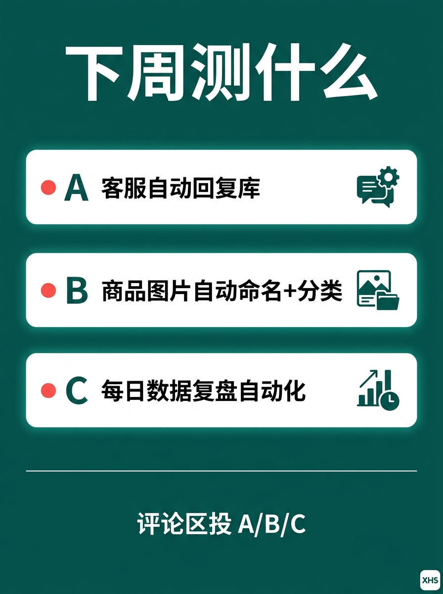
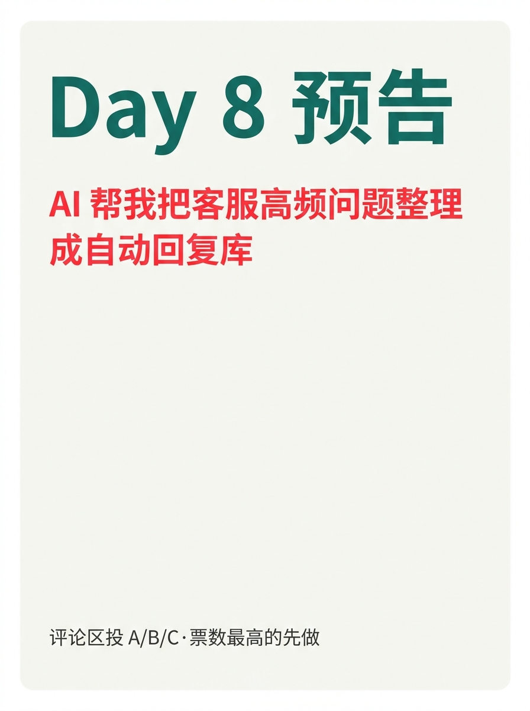

使用说明:所有内容已经按发布标准预排好,发布前请用最后一步的 3 个按钮复制。
6 张图按顺序上传小红书即可。






W1 复盘 · 3 有效 3 无效
开了 7 天,5 件事真的有效,3 件事完全无效。 W1 收官,把这周 8 个测试讲透, 评论区投下周 A/B/C,票数最高的先做。 ───── 5 件有效的事 ───── 1️⃣ D2 跑 3 套 AI 文案流程 B 组"先给 6 个卖点" = 0 错误 0 改稿 团队每人每天能产 20 篇不重复 2️⃣ D4 抓 4 类事实翻车 材质 / 容量 / 认证 / 价格 90% 翻车在前两类,小团队先盯死 3️⃣ D5 提"流程化思维" 输入 → 流程 → 输出 凭感觉的人 30 天后还在凭感觉 4️⃣ D6 推"重做"是流程缺失的副作用 累的不是事多,是每天复制粘贴 5️⃣ 每天 1 张封面 + 1 段正文 没间断 = 系列感 = 关注欲 ───── 3 件无效的事 ───── ❌ A 组 AI 一句话直接写 准备 0 分钟看起来快 改稿成本反而高 5 倍 ❌ 工具横评当爆款做 MJ / 即梦 / 香蕉 4 指标对比 数据党爱看,路人划走 ❌ 纯观点无清单 "程序员为什么做电商" 收藏率 0.8%,远低于干货类 6% ───── 2 个意外发现 ───── 📌 凭感觉 vs 流程化 评论区投票 5:1 5 个人 4 个在用流程 📌 "列清单"比"二选一"互动率高 50% D6 钩子升级验证成功 ───── W2 测什么(3 选 1)───── 🅰 客服自动回复库 500 条对话 → AI 聚类 → 30 条标准答案 目标:每天省 1.5 小时 🅱 商品图片自动命名+分类 文件名乱 → 规则引擎自动归档 目标:30 分钟 → 5 分钟 🅲 每日数据复盘自动化 4 项指标模板化,5 分钟出日报 目标:复盘时间压到 1/3 评论区:投 A / B / C 我会在 D8 公布票数 + 选票最高那个先做 票数前三都给一套完整脚本 ───── W1 一句话 ───── 有效的事,值得 30 天一直做。 无效的事,只值得做 1 次验证。 30 天里,2/8 的时间在选方向 = 浪费时间。 7/8 的时间在跑流程 = 真的积累。 关注我,看 30 天跑完我会得出什么结论 🌱
#前端转AI电商
#AI电商复盘
#周复盘
#用户共创
#真实实验
♡ 收藏
💬 评论
↗ 分享
📋 一键复制
📊 D7 数据复盘
复盘结构: 5 件有效 + 3 件无效 + 2 个意外发现 + W2 三选一投票 = W1 收官四段式方法论
5 件有效: B 组 AI 文案 / 4 类事实翻车 / 流程化思维 / 重做痛点 / 每天 1 篇不间断 —— 把"流程"立住
3 件无效: A 组 AI 直写 / 工具横评当爆款 / 纯观点无清单 —— 把"坑"摆明
2 个意外: 流程化认同 5:1 + 钩子"列清单"升级成功 —— 数据修正下一天方向
互动钩子: 投 A/B/C 选 W2 实验方向 —— 投票型钩子 W1 末段评论高峰,票数前三都给脚本
🚀 发布前 15 分钟 SOP
- 打开小红书 App → 创建笔记
- 选 6 张图(封面 1 + 内页 5),按顺序排好
- 选 3:4 竖图
- 标题:W1 复盘 · 3 有效 3 无效
- 正文:点"复制正文"按钮粘贴
- 加 5 个标签
- 选发布时间:周二 20:00-21:00(W1 收官叠加 + 复盘天然高曝光)
- 发布
📈 发布后 24 小时 SOP
| 时间 | 动作 | 目标 |
|---|---|---|
| 10 分钟 | 自己评论扣 1("A/B/C 投下周实验 · 票数最高的先做") | 激活投票型评论区 |
| 30 分钟 | 每条评论都认真回复 + 引导追加投票 | 投票率提升 |
| 2 小时 | 截图保存 W1 收官数据 | 复盘素材 |
| 6 小时 | 看一次数据(曝光/收藏/评论) | 判断是否二次推 |
| 24 小时 | 统计 A/B/C 票数 + 收藏率,决定 D8 选题 | W2 开篇方向 |
🎯 Day 7 数据目标
| 指标 | 目标 | 备注 |
|---|---|---|
| 曝光 | ≥ 1500 | W1 收官叠加 + 复盘天然高曝光 |
| 收藏率 | ≥ 8% | 复盘内容天然高收藏(留底用) |
| 评论 | ≥ 200 | 投票类钩子 W1 末段评论高峰 |
| 涨粉 | ≥ 200 | W1 收官冲一波,沉淀私域 |
| D8 钩子 | 按 A/B/C 投票决定 | W2 开篇方向由 D7 评论区投票决定 |
💡 关键设计点
1. 标题 = 数字 + 复盘钩子
- "W1 复盘" = 系列节点(用户知道"这是个连载")
- "3 有效 3 无效" = 数字冲击 + 三段式预告(暗示文章结构)
- 总字数 13 字 ≤ XHS 20 字上限 ✓
2. 正文 = 4 段式钩子
- 复盘结论(5 有效 3 无效 8 个测试,具体到 D 编号)
- 意外发现(凭感觉 5:1 + 列清单升级,数据驱动)
- W2 三选一(A/B/C 投票 + 票数前三都给脚本)
- 一句话总结(2/8 选方向 = 浪费时间,7/8 跑流程 = 真的积累)
3. 图文对应
- 图 01 = 封面("W1 复盘 · 3 有效 3 无效"大字 + "第一周实验报告"副标)
- 图 02 = 5 件有效(✅ 清单,绿色 = 经验证有效)
- 图 03 = 3 件无效(❌ 清单,红色 = 已踩坑)
- 图 04 = 2 个意外发现(数据点 + 反常识结论)
- 图 05 = W2 三选一(A/B/C 投票感,引导评论)
- 图 06 = Day 8 预告(承接投票,引导关注)
4. 承接 D1-D6 + 升级钩子
- D2 跑流程 → D4 抓翻车 → D5 立方法 → D6 给痛点 → D7 复盘 + 共创 = 5 段式递进
- 钩子升级:D5 二选一 → D6 列清单 → D7 投票(0 门槛 + 强参与 + 票数转化关注)
- D7 是 W1 收官日,投票决定 D8 选题 = 数据驱动下一天
⚠️ 注意事项
- 正文里 5+3+2 数字必须准确—— 用户按这个数投票,错了会被打回
- A/B/C 三个选项内容不要改—— 投票承诺在 D8 兑现,改了 = 失信
- 票数前三都给脚本的承诺要兑现—— D8 / D9 / D10 必须有对应公开
- 正文用"我"视角而非"你"—— 复盘类笔记第一人称更易拉近距离(对比 D5/D6 用的"你")
- 6 张图必须按顺序—— 封面(钩子)→ 有效(经验)→ 无效(避坑)→ 意外(数据)→ 下周(投票)→ 预告(关注)
- 正文里 ✅ 用墨绿 #0f766e,❌ 用小红书红 #ff2442—— 颜色编码贯穿(经验 = 绿,踩坑 = 红)